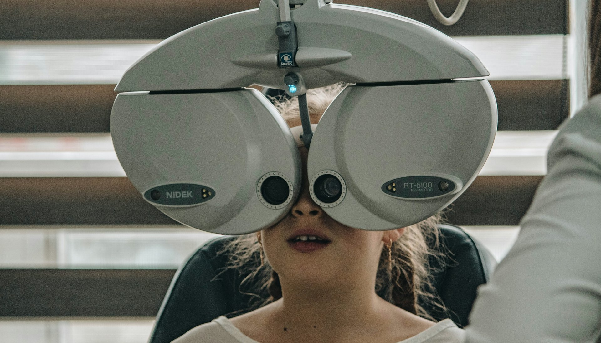
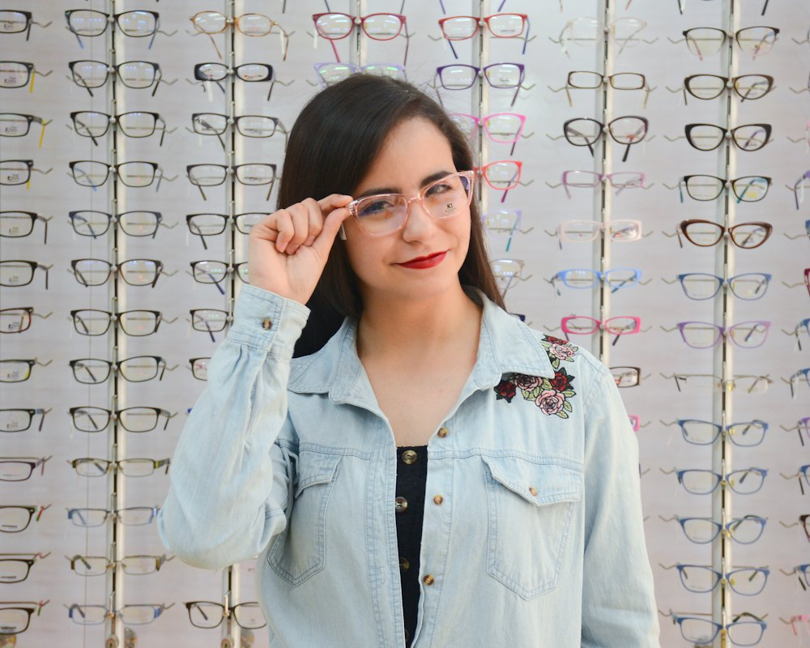
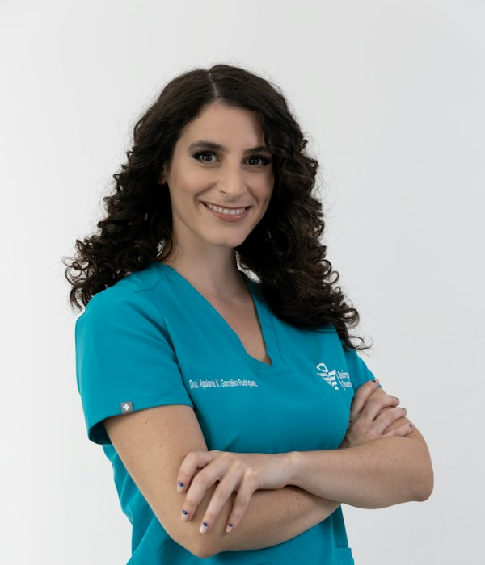
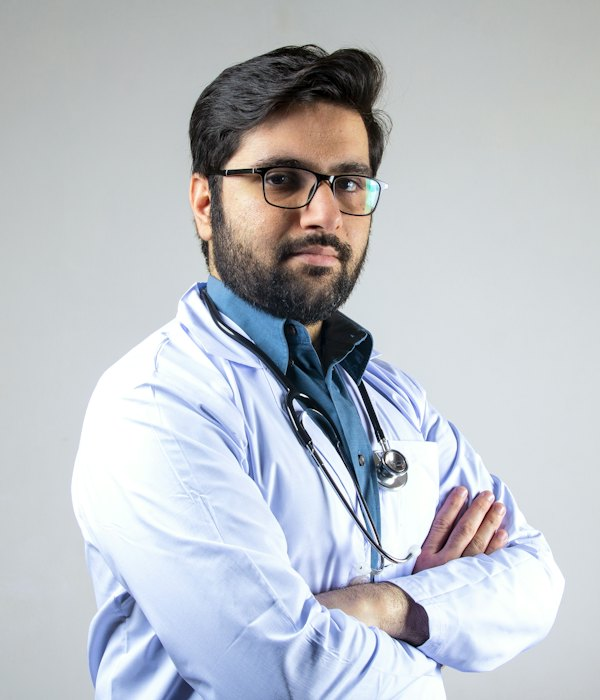

Eye clinic · four optometrists on site
Eye care first. Eyewear second.
Every Lumora appointment starts with the health of your eyes, not the price of a frame. We screen for glaucoma, cataract and diabetic changes before anyone mentions glasses.

Our story
A two-chair clinic that kept its promise to take its time
Optometrist Karthik Rao opened Lumora in 2012 after eight years in a hospital eye department, where tests were squeezed into seven minutes. His rule was simple: an eye test lasts as long as your eyes need.
Today four optometrists and three dispensing opticians share the same rule, and the appointment book still leaves room for questions.
- 38,000+eye exams since 2012
- 9,400children screened free at school camps
- 7eye-care professionals on the team
- 14 yrson 12th Main, Indiranagar
Specialty clinics
When glasses alone aren’t the answer
Beyond routine eye tests, our optometrists run six focused clinics by appointment. Prices are for the first assessment.
-
Myopia control for children
Defocus spectacle lenses, myopia-control soft contacts and six-monthly eye-length measurements to slow worsening short sight.
₹4,500per year
-
Dry eye clinic
Tear-film tests and eyelid-gland imaging for gritty, tired eyes — common after long screen days in air-conditioned offices.
₹1,50040 min
-
Diabetic eye screening
Retinal photographs and an OCT scan, with a written report for your physician within 24 hours.
₹1,10030 min
-
Keratoconus & specialty lenses
Scleral and rigid gas-permeable lenses for irregular corneas, fitted over two or three visits.
₹3,500full fitting
-
Low vision support
Magnifiers, telescopic aids and lighting plans for macular degeneration and other conditions glasses can’t fully correct.
₹1,20060 min
-
Binocular vision & eye strain
Checks for eye-teaming and focusing problems behind reading fatigue or double vision, with a six-week exercise plan.
₹1,40045 min
The optometrists
Four specialists, one shared patient record
Whoever you see, your scans and notes from every visit are on screen — nobody starts from scratch.
-
Karthik Rao
Founder & clinical director
M.Optom, 22 years in practice. Leads glaucoma screening and complex prescriptions.
Speaks English, Kannada, Telugu
-

Sana Fernandes
Paediatric & myopia optometrist
B.Optom with a paediatric fellowship. Runs the children’s clinic and our school eye camps.
Speaks English, Konkani, Hindi
-

Arjun Menon
Contact lens specialist
B.Optom, FIACLE. Fits scleral and keratoconus lenses and trains first-time wearers.
Speaks English, Malayalam, Tamil
-
Priya Raghavan
Dry eye & low vision optometrist
M.Optom. Heads the dry eye clinic and low vision aids service.
Speaks English, Tamil, Kannada
Patient reviews
What patients say after the appointment
I’d been told twice that my headaches were “just stress”. Priya found a small uncorrected astigmatism plus dry eye from ten-hour coding days. Two weeks later the headaches had stopped.
Sana turned my six-year-old’s first eye test into a game. We joined the myopia programme and his last two check-ups have shown barely any change.
Arjun spent three visits getting my scleral lenses right for keratoconus. For the first time in years I can drive at night without halos.
Quick self-check
Is it time for an eye test?
Tick anything that sounds familiar and we’ll suggest the right appointment. It’s guidance, not a diagnosis.
Healthy adults under 60 should be checked every two years. Children who wear glasses, people with diabetes and everyone over 60 should come once a year.
Nothing ticked yet
Your suggestion will appear here.